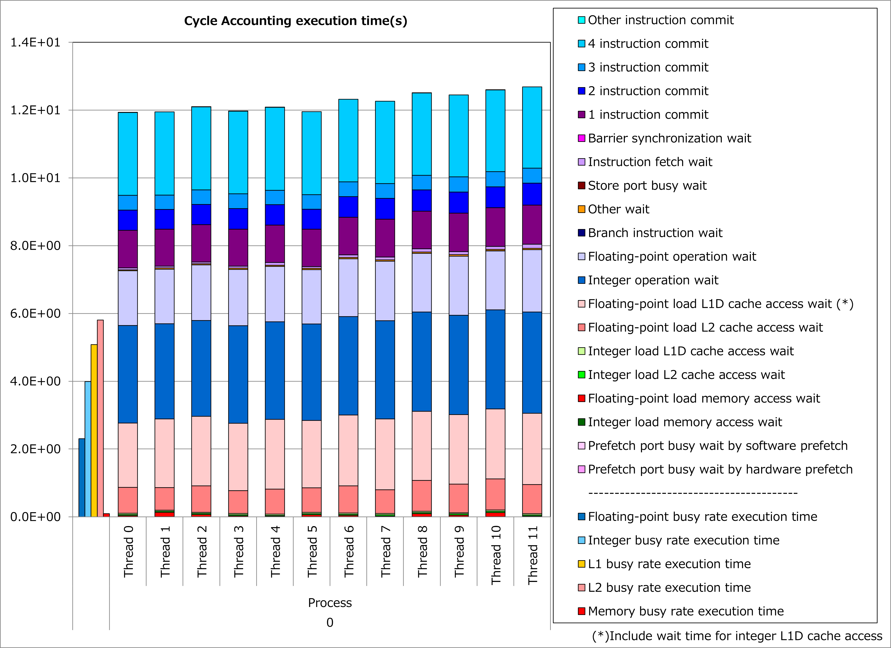

3.1. Fission of Loop with Large Loop Body¶
3.1.1. Motivation¶
Fujitsu Fortran/C/C++ compilers try to apply a compiler optimization of software pipelining for exploiting computational performance of A64FX processors. However, since this optimization consumes more floating-point/integer/predicate registers on A64FX processors than usual, there are cases where the software pipelining can not be applied due to register shortage when a loop of optimization target has a large loop body.
In such cases, users can advise the compilers to distribute a loop with a large loop body automatically, by inserting an Optimization Control Line (OCL) of “loop_fission_target” into the source program.
As a result, a loop with a large loop body on the source program is treated by the compilers as several loops with small loop bodies so that compiler optimizations such as the software pipelining and register allocation are promoted and it might lead to reduction of execution time.
3.1.2. Applied Example¶
Referring to an example presented in “Meetings for application code tuning on A64FX computer systems”, performance improvement by applying this technique is shown below. In this example, an OCL of “loop_fission_target” was added to a loop for do-variable ii, which has a large loop body.
do ii=cumcnt(i,j,k,isp)+1,cumcnt(i+1,j,k,isp)
dh = up(1,ii,j,k,isp)*idelx-0.5-i
s0x(-2) = 0.D0
s0x(-1) = 0.5*(0.5-dh)*(0.5-dh)
s0x( 0) = 0.75-dh*dh
s0x(+1) = 0.5*(0.5+dh)*(0.5+dh)
s0x(+2) = 0.D0
dh = up(2,ii,j,k,isp)*idelx-0.5-j
s0y(-2) = 0.D0
s0y(-1) = 0.5*(0.5-dh)*(0.5-dh)
s0y( 0) = 0.75-dh*dh
s0y(+1) = 0.5*(0.5+dh)*(0.5+dh)
s0y(+2) = 0.D0
dh = up(3,ii,j,k,isp)*idelx-0.5-k
s0z(-2) = 0.D0
s0z(-1) = 0.5*(0.5-dh)*(0.5-dh)
s0z( 0) = 0.75-dh*dh
s0z(+1) = 0.5*(0.5+dh)*(0.5+dh)
s0z(+2) = 0.D0
i2 = int(gp(1,ii,j,k,isp)*idelx)
dh = gp(1,ii,j,k,isp)*idelx-0.5-i2
inc = i2-i
s1_1 = 0.5*(0.5-dh)*(0.5-dh)
s1_2 = 0.75-dh*dh
s1_3 = 0.5*(0.5+dh)*(0.5+dh)
smo_1 = -(inc-abs(inc))*0.5+0
smo_2 = -abs(inc)+1
smo_3 = (inc+abs(inc))*0.5+0
dsx(-2) = s1_1*smo_1
dsx(-1) = s1_1*smo_2+s1_2*smo_1
dsx( 0) = s1_2*smo_2+s1_3*smo_1+s1_1*smo_3
dsx(+1) = s1_3*smo_2+s1_2*smo_3
dsx(+2) = s1_3*smo_3
i2 = int(gp(2,ii,j,k,isp)*idelx)
dh = gp(2,ii,j,k,isp)*idelx-0.5-i2
inc = i2-j
s1_1 = 0.5*(0.5-dh)*(0.5-dh)
s1_2 = 0.75-dh*dh
s1_3 = 0.5*(0.5+dh)*(0.5+dh)
smo_1 = -(inc-abs(inc))*0.5+0
smo_2 = -abs(inc)+1
smo_3 = (inc+abs(inc))*0.5+0
dsy(-2) = s1_1*smo_1
dsy(-1) = s1_1*smo_2+s1_2*smo_1
dsy( 0) = s1_2*smo_2+s1_3*smo_1+s1_1*smo_3
dsy(+1) = s1_3*smo_2+s1_2*smo_3
dsy(+2) = s1_3*smo_3
i2 = int(gp(3,ii,j,k,isp)*idelx)
dh = gp(3,ii,j,k,isp)*idelx-0.5-i2
inc = i2-k
s1_1 = 0.5*(0.5-dh)*(0.5-dh)
s1_2 = 0.75-dh*dh
s1_3 = 0.5*(0.5+dh)*(0.5+dh)
smo_1 = -(inc-abs(inc))*0.5+0
smo_2 = -abs(inc)+1
smo_3 = (inc+abs(inc))*0.5+0
dsz(-2) = s1_1*smo_1
dsz(-1) = s1_1*smo_2+s1_2*smo_1
dsz( 0) = s1_2*smo_2+s1_3*smo_1+s1_1*smo_3
dsz(+1) = s1_3*smo_2+s1_2*smo_3
dsz(+2) = s1_3*smo_3
dsx(-2:2) = dsx(-2:2)-s0x(-2:2)
dsy(-2:2) = dsy(-2:2)-s0y(-2:2)
dsz(-2:2) = dsz(-2:2)-s0z(-2:2)
!OCL UNROLL('FULL')
do kp=-2,2
do jp=-2,2
pjtmpx = 0.D0
pjtmpy = 0.D0
pjtmpz = 0.D0
dstmpx = (s0y(jp)+0.5*dsy(jp))*s0z(kp) &
+(0.5*s0y(jp)+fac*dsy(jp))*dsz(kp)
dstmpy = (s0x(jp)+0.5*dsx(jp))*s0z(kp) &
+(0.5*s0x(jp)+fac*dsx(jp))*dsz(kp)
dstmpz = (s0x(jp)+0.5*dsx(jp))*s0y(kp) &
+(0.5*s0x(jp)+fac*dsx(jp))*dsy(kp)
do ip=-2,1
pjtmpx = pjtmpx-q(isp)*delx*idelt*dsx(ip)*dstmpx
pjtmpy = pjtmpy-q(isp)*delx*idelt*dsy(ip)*dstmpy
pjtmpz = pjtmpz-q(isp)*delx*idelt*dsz(ip)*dstmpz
pjx(ip+1,jp,kp) = pjx(ip+1,jp,kp)+pjtmpx
pjy(ip+1,jp,kp) = pjy(ip+1,jp,kp)+pjtmpy
pjz(ip+1,jp,kp) = pjz(ip+1,jp,kp)+pjtmpz
enddo
enddo
enddo
enddo
!OCL LOOP_FISSION_TARGET(LS)
do ii=cumcnt(i,j,k,isp)+1,cumcnt(i+1,j,k,isp)
...
enddo
Results of cycle accounting for executions before/after applying the technique are shown in graphs below. A parameter for the loop execution is as follows:
cumcnt(i+1,j,k,isp) - cumcnt(i,j,k,isp) = 20
Comparing the right graph for the technique applied to the left graph for the original, busy and waiting time for integer calculation decreased dramatically and execution time was reduced by 44%. At the time, decrease of busy and waiting time for L1D cache access is considered as a result of suppressing register spill/fill behavior of the processor by loop fission.
{kind=link}

3.1.3. Real Cases¶
Real cases related to this technique are presented in “Meetings for application code tuning on A64FX computer systems” as follows:
3.1.4. References¶
Notice: Access rights for Fugaku User Portal are required to read the above documents.